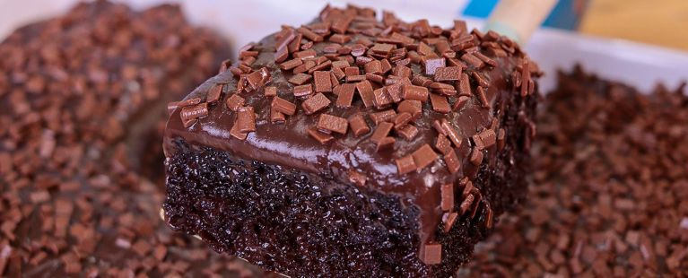

Ingredientes
- 2 xícaras de farinha de trigo
- 1 xícara de açúcar
- 1 xícara de chocolate em pó
- 3 ovos
- 1 xícara de leite
- 1/2 xícara de óleo
- 1 colher de sopa de fermento em pó
Modo de Preparo
- Preaqueça o forno a 180°C.
- Em um recipiente, misture os ovos, o açúcar e o óleo.
- Adicione o leite e o chocolate em pó, misturando bem.
- Acrescente a farinha de trigo aos poucos.
- Por último, adicione o fermento e misture delicadamente.
- Despeje a massa em uma forma untada.
- Asse por aproximadamente 35 minutos.
- Espere esfriar e sirva.